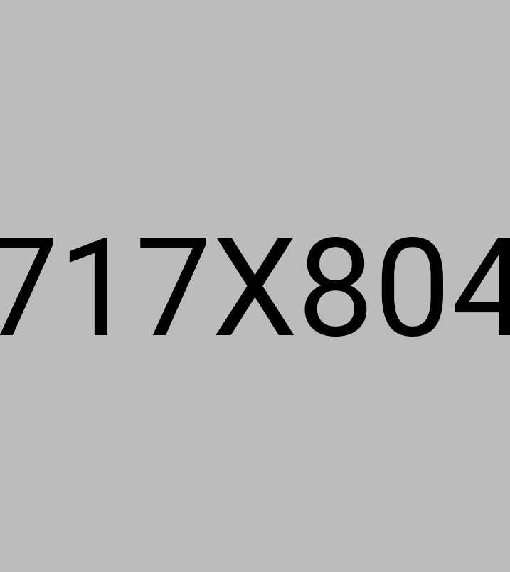
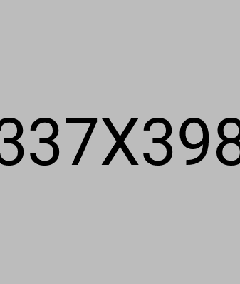
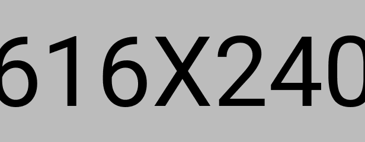
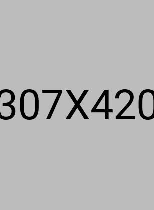
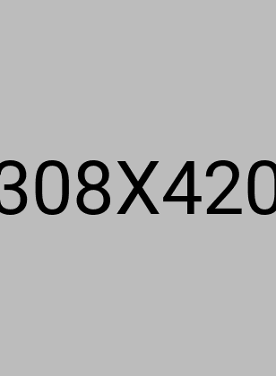
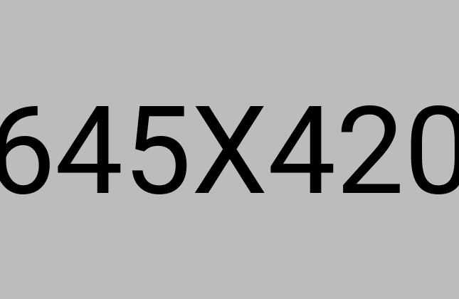
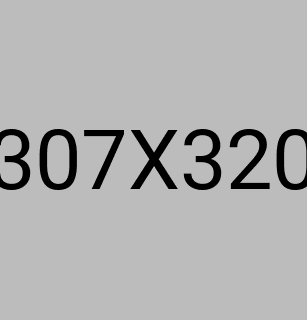

Escribania en Capital Federal con foco en tramites notariales concretos, orientacion previa y una atencion clara para resolver certificaciones, poderes, escrituras, sucesiones y otras gestiones en CABA.
Escribania en Capital Federal con foco en tramites notariales concretos, orientacion previa y una atencion clara para resolver certificaciones, poderes, escrituras, sucesiones y otras gestiones en CABA.
Certificacion de firmas, poderes, autorizaciones, escrituras, boletos de compraventa, sucesiones y tramites notariales en CABA con atencion clara, profesional y agil.

Explicamos el tramite, la documentacion posible y los pasos a seguir para que puedas resolverlo sin vueltas.
Trabajamos certificaciones, poderes, autorizaciones, escrituras, sucesiones y distintos tramites notariales en CABA.
Priorizamos consultas por WhatsApp o formulario para indicarte tiempos orientativos y como avanzar.

Una escribania en Capital Federal necesita transmitir orden, seriedad y practicidad. Por eso este home prioriza una atencion profesional, explicaciones simples y tramites notariales concretos para personas que necesitan resolver una gestion puntual sin perder tiempo.
Certificacion de firmas, fotocopias y documentacion para tramites personales, comerciales y administrativos.

Poderes generales y especiales, autorizaciones para menores, permisos de viaje y declaraciones juradas.

Asesoramiento notarial para operaciones inmobiliarias, escrituras, boletos y tramites vinculados a inmuebles.

Consultas sobre sucesiones, actas notariales, protocolizacion de documentos y orientacion previa del tramite.



Recibimos tu consulta por WhatsApp o formulario para entender que tramite necesitas hacer y en que plazo queres resolverlo.
Indicamos la documentacion que puede ser necesaria segun el tramite para evitar demoras y organizar mejor la atencion.
Confirmamos modalidad, tiempos orientativos y pasos concretos para certificaciones, poderes, escrituras u otros tramites notariales.
Acompanamos la gestion hasta finalizar el tramite con una comunicacion clara y orientada a que avances con seguridad.







Firmas, copias y documentacion respaldatoria.

Poderes generales, especiales y representaciones puntuales.

Escrituras, boletos de compraventa y tramites de inmueble.

Autorizaciones para menores, permisos de viaje y orientacion sucesoria.


Antes de ir, muchas personas quieren saber que documentacion pueden necesitar, si conviene consultar por WhatsApp y cuanto puede demorar el tramite segun el caso.

La confianza en una escribania se construye con pasos simples: explicar el procedimiento, anticipar requisitos, ordenar la gestion y responder con seriedad.